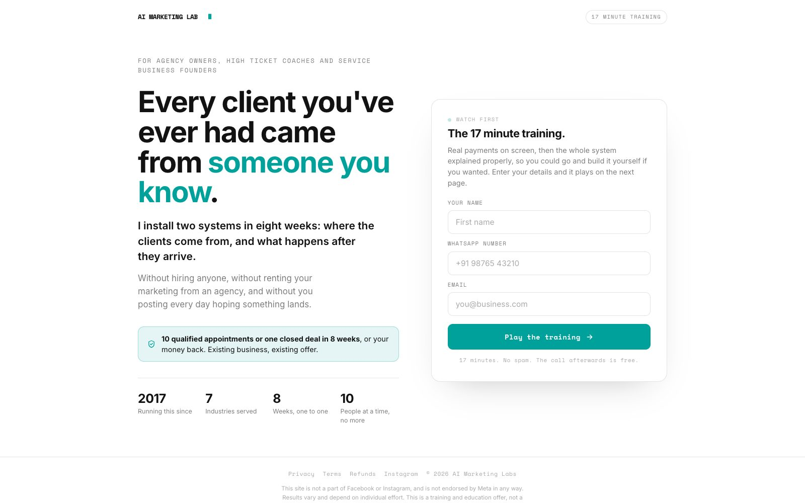

For marketing agency owners, high ticket coaches and service business owners
Word of mouth is everything. Until the month nobody sends anyone.
A free 90 minute session. I build the thing that brings clients in without a referral, live, on screen, and you copy it.
Sandy KadyanRunning a marketing agency since 2017. Vancouver, now run from India.
What the quiet month looks like
Nothing broke. The referrals just stopped.
In India, word of mouth is everything. You do good work for one person, they send three more.
Agency owner, r/IndianEntrepreneur
Referral pipeline
>
Nothing scheduled, nothing following upIllustration
We're stuck in the similar reference pipeline and inconsistent monthly revenue.
Agency owner, r/IndiaBusiness
I am a nutritionist, and yes, getting good clients is a major issue.
Coach, r/indianfitness
profits only show up during bridal season. Every other month is either barely breaking even or a small loss.
Salon owner, r/IndiaBusiness
The 90 minutes
What actually happens on the call.
No slides for most of it. You watch the thing get built and you keep what I write.
1
Where your clients actually came from
Every client you closed this year on one screen, with what started it.
2
The one channel to start this week
One channel, not five. The exact first message, post or ad for day one.
3
A live build, start to finish
I open Claude Code and build it in front of you, including the parts that go wrong.
Claude Code
outreach that keeps following up
the enquiry answered at midnight
the post that goes out without you
yours to keep
4
The six weeks, and how to join
What it covers and what it costs, at the end. Leave after the build and you keep what you saw.
Proof
Real payments. Real clients.
InboxMedico ConstructionRiarh GroupScale Your ResultsPrepare MedicalCody SturgessBest Home KitchensAmarpreet Nagra
10,000 CADMedico Construction$5,000.00 CADRiarh GroupCA$4,000.00Scale Your ResultsCA$2,500.00Prepare MedicalCA$2,000.00Cody SturgessCA$1,500.00Best Home Kitchens300 CADAmarpreet Nagra10,000 CADMedico Construction$5,000.00 CADRiarh GroupCA$4,000.00Scale Your ResultsCA$2,500.00Prepare MedicalCA$2,000.00Cody SturgessCA$1,500.00Best Home Kitchens300 CADAmarpreet Nagra
300 CADAmarpreet NagraCA$1,500.00Best Home KitchensCA$2,000.00Cody SturgessCA$2,500.00Prepare MedicalCA$4,000.00Scale Your Results$5,000.00 CADRiarh Group10,000 CADMedico Construction300 CADAmarpreet NagraCA$1,500.00Best Home KitchensCA$2,000.00Cody SturgessCA$2,500.00Prepare MedicalCA$4,000.00Scale Your Results$5,000.00 CADRiarh Group10,000 CADMedico Construction
Hover to stop the wall
These are the ones where the payment email can be shown.
The work
Four kinds of output. One system.
Split by what gets produced, not by who paid for it.
01
Design
riarhgroup.com
A commercial construction firm in British Columbia. Built end to end, live on their own domain.
02
Content
aimarketinglabs.in

This funnel. The pages, the emails and the follow up, produced by the same stack.
03
Automations
ours, always on
inEnquiry from the site form
replyAnswered, not queued for morning
recordWritten into the client record
followFollow up set
learnWhat worked is kept
no one at a deskAI Marketing Lab
The part nobody sees. It runs when no one is at a desk, and keeps what worked.
04
Performance
2,202clicks in thirty days
103leads at $8.90 each
1,116realtors sourced and verified
Meta ad account act_777763308169871, thirty day report, 7 May 2026. Realtor rows counted from MASTER_realtor_emails.tsv.
Campaigns run end to end, with the list underneath them.
If you want it built with you
Six sessions. You build your own.
One session a week, as a group. Nothing is charged on this page. I explain it at the end of the free session and you decide there.
The order inside them gets set once I know what each of you sells. I am not printing a syllabus here and then teaching something else.
Session planOne a week
01
02
03
04
People start arriving
The first four go on getting people to come to you, built and running while you watch.
05
06
It answers, follows up and reports back
The last two go on the part that keeps the first four working on a day you do nothing.
Order set with the group$200
Who is running it
Sandy Kadyan.
Agency since 2017 · Vancouver · now run from India
The work used to be done by people. Over the last eight months I rebuilt more than half of it to run on Claude Code: the outreach, the content, the ad reporting, the follow up, the delivery.
That rebuild is what I show you on the session. Not a tool list, not slides. The actual setup on screen, doing the work, and you keep what I write in front of you.
Sandy
Honest filter
Who should not take a seat.
Seats are limited by the room, not by a countdown. Find yourself in one of these two columns.
Come along
Agency owner
Your pipeline goes quiet every time you get busy delivering.
High ticket coach
You need booked calls this month, not more followers.
Service business
Enquiries go cold before anybody calls them back.
Skip this one
Not yet
Nobody has paid you yet. Sell something first, then come back.
Recording only
You want the recording and none of the work.
Done for you
You want somebody to run it all for you. Different conversation, different price.
Before you register
The questions that come up every time.
01Is the session actually free?OpenClose
Yes. Ninety minutes, nothing to pay, no card asked for anywhere on this page.
02What does the six weeks cost?OpenClose
$200, as a group, one session a week. I explain it at the end and you decide then. Nothing is sold on this page.
03Do I need to be technical?OpenClose
No. You tell Claude Code what you want in plain English. The session shows what that looks like, including the parts that go wrong.
04I cannot make Sunday.OpenClose
Sessions run Tuesday, Thursday and Saturday at 6:00pm IST, Sunday at 11:00am IST.
05Is there a recording?OpenClose
Come live. I answer questions on the call.
The next one is Sunday.
You leave with the first piece built.
Cost
Free, no card, nothing to buy here
Length
90 minutes
Sessions
Tuesday, Thursday, Saturday 6:00pm IST, Sunday 11:00am IST

 Sandy KadyanRunning a marketing agency since 2017. Vancouver, now run from India.
Sandy KadyanRunning a marketing agency since 2017. Vancouver, now run from India.